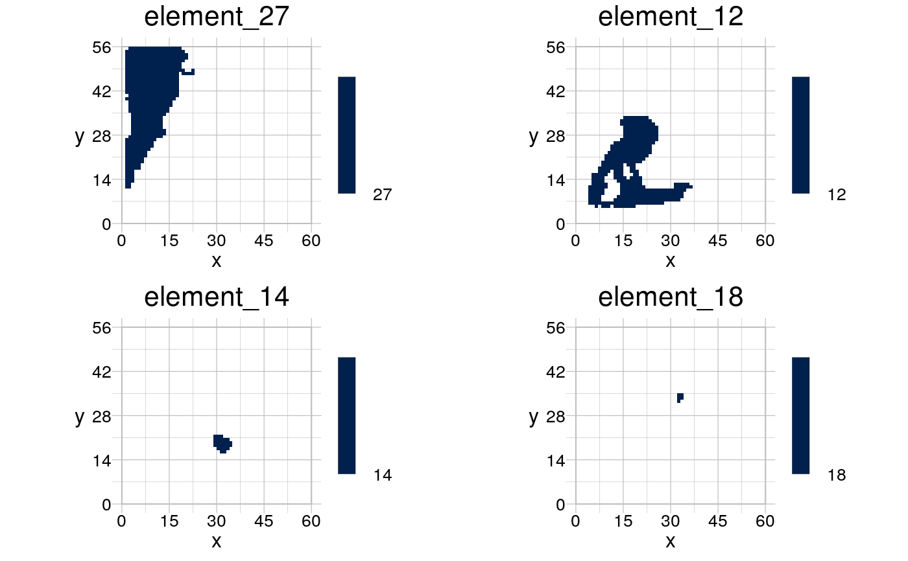
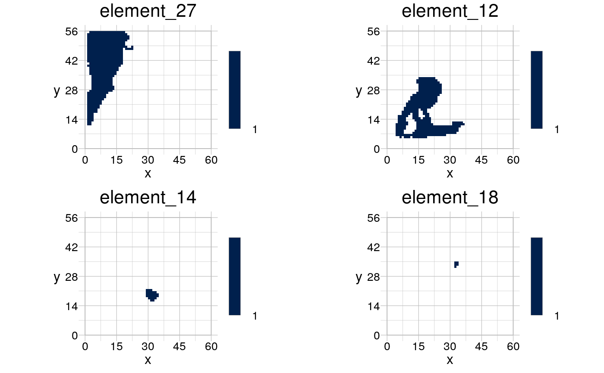
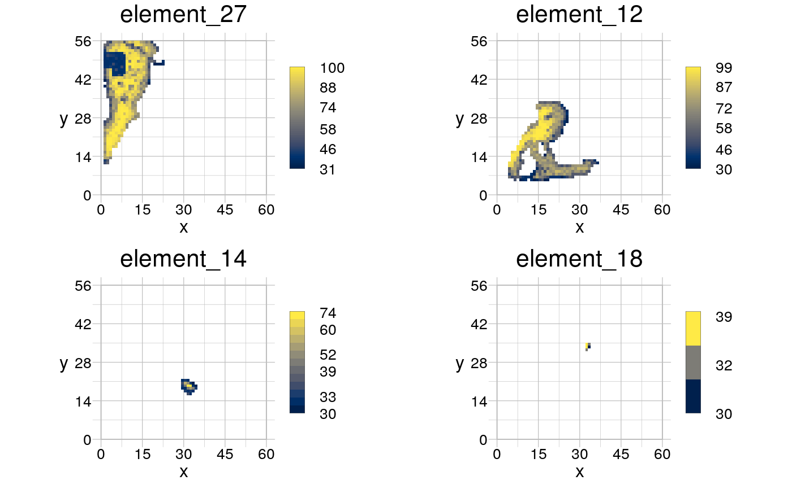

Distinct values in a raster will be assigned to layers in a raster stack.
rSegregate(obj, by = NULL, flatten = FALSE, background = NULL)
| obj | [ |
|---|---|
| by | [ |
| flatten | [ |
| background | [ |
a RasterLayer stack of the same dimensions as obj, in
which the elements specified in by or the distinct values of
obj have each been assigned to a layer of the raster stack.
input <- rtData$continuous patches <- rPatches(rBinarise(input, thresh = 30), background = 0) myPatches <- rSegregate(patches) visualise(myPatches[[c(2, 3, 12, 16)]])# when flattening, all values are set to 1 myPatches2 <- rSegregate(patches, flatten = TRUE) visualise(myPatches2[[c(2, 3, 12, 16)]], new = TRUE)# cut out by 'patches' patchValues <- rSegregate(input, by = patches) visualise(patchValues[[c(2, 3, 12, 16)]], new = TRUE)